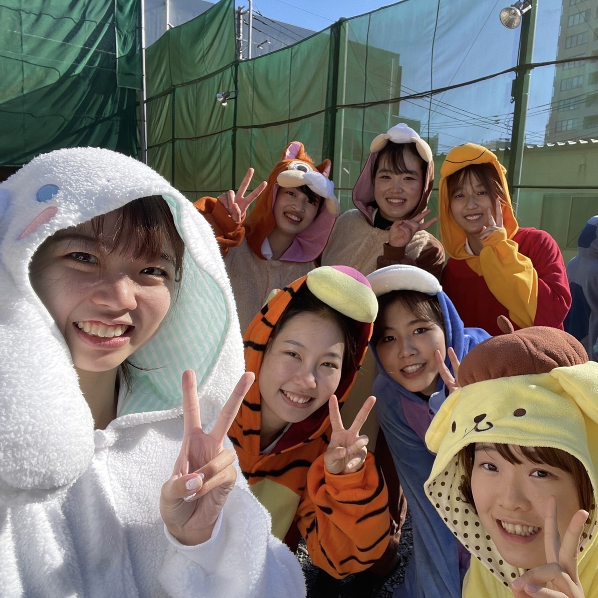

３回目の今回は国際社会科学部国際社会科学科の小鷹愛奈さんです！小鷹さんは来年度の副将を務めます。留学や休みの日の過ごし方についても話してくれました。
国社のいいところは留学できる環境が整っているところだと思います。コロナ禍で海外に行くことが難しくなりましたが、オンラインプログラムも用意されて、それを含めると期間や国の選択肢がたくさんあります。私はオンラインプログラムに参加しましたが、現地に行かないのはやはり物足りなさを感じました。来年度こそは留学や旅行にもう少し行けるようになっていて欲しいです、、履修に関しては国社が開講する社会科学科目を早い時期から幅広く取っておくと自分の興味がある分野を見つけられたり、後々の単位にも余裕ができると思います。
コロナの影響でわたしが1年生のときはほとんどの部活が活動をストップしていました。 ただ、中高で運動部に所属していたこともあり大学でも運動部に入りたいと思っていたので、2年生になった頃が最後のチャンスだと思いました。そんな時にSNSでアーチェリー部の体験会を知り参加しました。全く未経験のスポーツを 2年生から始めることに不安もありましたが、賑やかな雰囲気に惹かれて、チャレンジしてみたいという気持ちが勝り入部を決めました。また、今は対面授業も少ないので大学で友人と会う機会は本当に限られますが、部活に入ったことで学年や学科を超えた交友関係を築くことができたので良かったと思います。部活に限らずなにか興味のあるコミュニティ等に参加してみることをみなさんにもおすすめします！
学部の同じ同期が3人いるので仲良く頑張っています！先輩も3人いらっしゃるので、たくさん助けていただいて両立しています。履修している授業によりますが、私が受講した今年度の授業は全てオンラインだったので部活のない日にまとめて受けたり、レポートも提出までの期間がある程度設けられていたので、内容について同期とたくさん相談したり意見交換をして乗り切りました。
アーチェリーは個人競技ですが、部としてはチームの力を感じられるところが魅力だと思います、練習では学年を超えてお互いにアドバイスしあったり、試合でも声を掛け合ってチーム全体を盛り上げます。仲間と切磋琢磨して上達するのを感じられるところがいいところです！
自主練の日は午前中に練習して午後にバイトをすることが多いです。学内に射場があるので好きな時間に練習することができ、バイトと部活はもちろん、学業と部活の両立もしやすいです！柔軟に自分のスケジュールを組むことができるのもアーチェリー部のいいところだと思います！
ドラマや映画を観たりして家で過ごすことが多いです。
新入生の皆さん、ご入学おめでとうございます。コロナが未だ終息せずこれからの生活も先行きが見えませんが、皆さんがそれぞれ素敵なキャンパスライフを過ごせるように願っています。また、少しでも興味がありましたらぜひアーチェリー部にも一度足を運んでみてください！体験会などで皆さんとお会いできることを楽しみにしています！！
いかがだったでしょうか。このようにアーチェリーは未経験で始める部員が大半なので初心者であっても心配いりません！次回は同じく国際社会科学部国際社会科学科の島田好乃さんです！